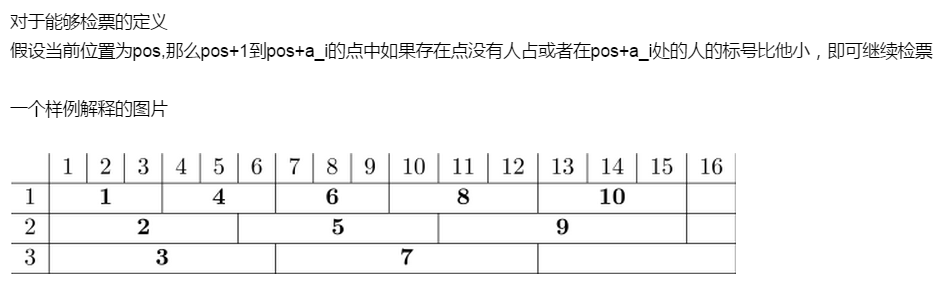

一辆无限长的列车,有k个检票员,每个检票员一次检验ai个车厢,初始时所有检票员在0号车厢, 列车长每次命令最靠左的编号最小的且能够继续检票的检票员向右走ai步,一共发出n个命令,输出每个售票员走的最后一步是列车长的第几次命令
第一行两个数n,k(n<=2*10^13,k<=10^5,k<=n) 第二行k个数,表示每个检票员一次检验的长度ai(ai<=10^5)
10 3 3 5 6
10 9 7
